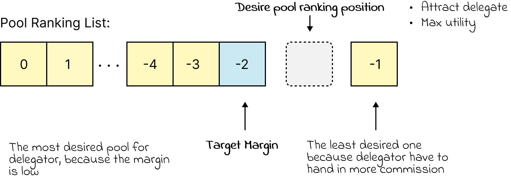

Stakeholder Profiles
This simulation indented to simulate real world Ethereum Pooling behaviors. However after trying, I decided to develop several types of stakeholder for better exploration.
ETH stakeholder
ETH Stakeholder have attributes like cost for opening pool, stake, current strategy and new strategy.
They have two types of stategy: delegate or operate. In operate, they can operate liquid pool that is not private and allows others to stake inside their pool, or operate solo pool.
During each agent step, they will try to update their strategy by calcualting several options they have and they choose the most optimal one.
- Delegate strategy: They will put all their stake in delegation and see how it comes, but calculating the potential utility they can have by this delegate strategy. To note that, stakeholders are activated by random older and act semisimoutineous, so they are myopic and not have the potential to predict or imagine future pool or simulation status. For example, in the first step of simulation, the first agent in activation, they have no choice to delegate because there is no pool in the simulation but to operate pool.
- Pool operation strategy: this is different during each different stakeholder profile.
After calculating these two potential strategies, they then compare it with current strategy and see if they can make more profit by changing their current one. If so, they will update their strategy and then execute it. If no agent can make more profit by changing their strategy, the equilibrium is reached.
ETH stakeholder Easy
Easy stakeholder is more align with real world. They can choose from different extablished liquid contract just like in realworld ETH holder can choose solo stake or use liquid protocol like lido or rocket pool.
- Pool operation strategy: Having same unit of minimum effective balance, it is more beneficial to choose solo staking because they can spend less cost on operating. Even though due to scale of economics, their second pool will be less expensive thay the first one, but this cost is usually higher than their delegation. They can calculate base on their cost and protocol margin and then rank solo or liquid strategy. If they have enough stake, they will have more utility by choosing solo.
ETH stakeholder Hard
Easy stakeholder is more align with real world. They can choose from different extablished liquid contract just like in realworld ETH holder can choose solo stake or use liquid protocol like lido or rocket pool.
Find Margin
The main target of margin selection progress is maximize their profit.
By delegation and solo staking, their reward is totally depend on the reward scheme so can not be influenced by their selection
For a agents who have enoughs stake to solo or liquid operation, they will try to make the most of their profit by operating liquid pool with a big margin. So this margin is called better than solo and delegate margin, denote as margin_0.
with margin_0: solo_utility(alpha) = liquid_utility(alpha)
For agents who only have enought stake to liquid opertaion, the only reason for them to operate liquid pool is that it need to be more profit than delegate. so margin_0 is called better than delegate margin.
with margin_0: liquid_utility(alpha)=delegate_utility(alpha)

With number of liquid pools the operator want to operate, they will try to squeeze in the exsisted pool ranking, in the last second position because it is enought to attract delegate because it is ranked higher than the last one, but also maximize their utility.
So their potential margin will be the Target Margin+random boost from (1e-3,1e-2) (margin is usually at the scale of 1e-1).
If the potential margin is bigger than margin_0, then it will be it. If not, they will stop opening the liquid pool.